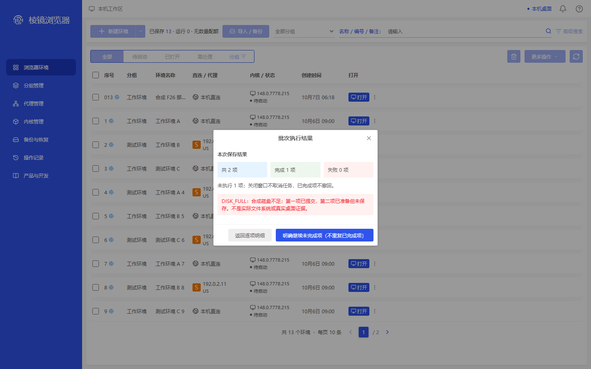

env-frontier-f26-native-partial-create-retained · 1440×900
ADAPTED — Actual white400px result dialog and single dim mask; total2/completed1/failed0/not-executed1 and synthetic DISK_FULL explanation are readable. Both footer controls remain inside the PNG; no obvious overlap, clipped result text or horizontal overflow. Retained synthetic environment row/13 saved count is visible; hidden identity/persistence is not a pixel conclusion. Adapted from the original injected400px mixed-open result family; proxy-bound1040px is a different-business list-container mapping, not this image or a direct F26 reference. No same-business original partial-create image; no1040px detail, callback or drawer PNG inferred.
映射容器 proxy-bound；不代表同业务原参考已找到。


25e6826f94201fdc551be288de63c9bec2a24bc9bc7814955e191ada5c445ee0